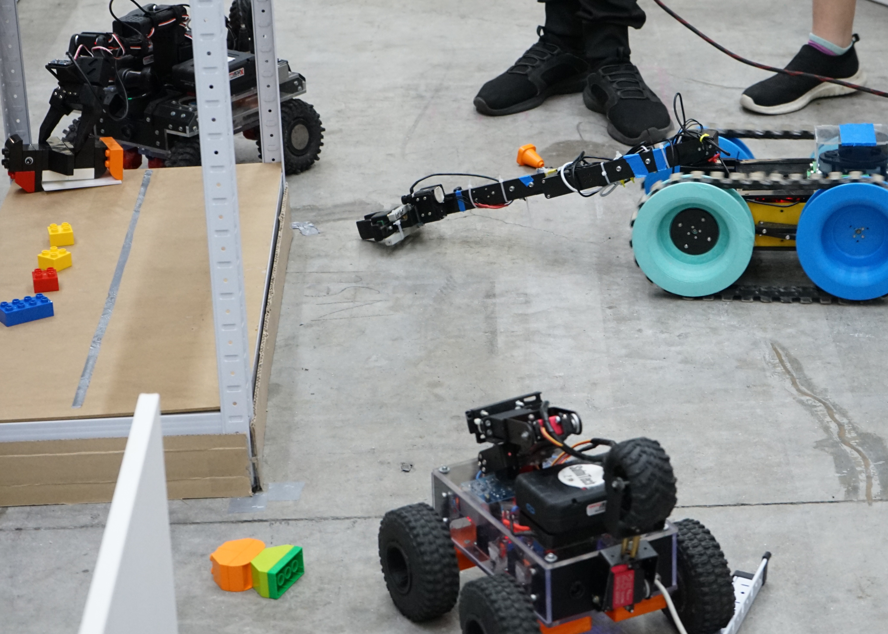
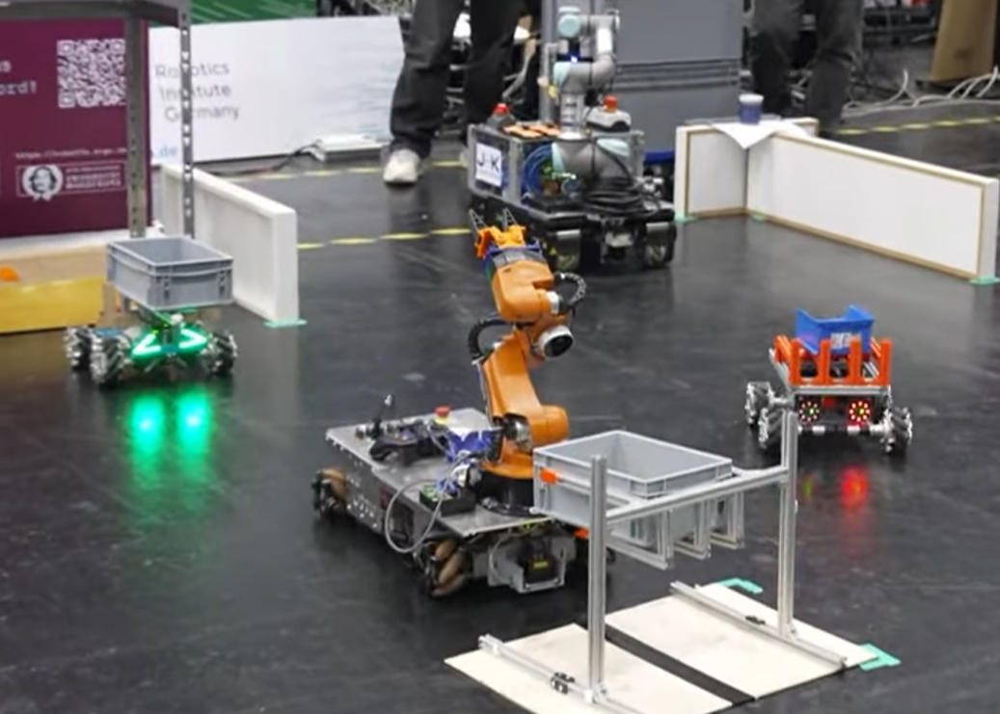

Whether you're just getting started or already have RoboCup experience, all you need is curiosity and a passion for robotics. The rest comes along the way.
RoboCup is an international competition: the rulebook is being written in English, and the path leads to the international stage.


Industry Pathway is deliberately open at the entry point. If any of these describe you, you're in the right place.
No upper limit — older classes are just as welcome. This is where most teams will start.
Mechatronics, IT, engineering — bring the shop floor you already know into the arena.
A fitting entry point if the RoboCup Major League still looks too complex to jump into directly.
Cooperations are explicitly welcome — with industry partners on scenarios and ideas, and between schools and universities. Mixed teams of school students and university students are possible.
Here is how a team goes from “we heard about this” to standing at a real arena with a real robot.
Get your students around a table for a workshop on Industry 4.0 and mobile robots. We supply a ready-made guide, and we are happy to run it with you. The students answer the open questions: what should this competition look like at RoboCup, and which tasks do they want their robots to solve?
Everything the workshops produce feeds into the first rulebook — and the students stay on board while it is written. They are not here to read the rules. They are here to write them.
The rulebook itself is still being written and is not published yet — that's the part you can help shape.
Nuremberg. A workshop and a test competition where the draft rules meet real robots on a real field for the first time. Bring a team, bring a robot, bring the objection you have been saving — that is exactly what a test run is for.
31 Oct – 4 Nov 2026 · NurembergLarge parts of how this competition will work — the arena, the tasks, the scoring — are still open. That is not an oversight, it is the invitation.
Mixed teams, cross-institution cooperation, and industry input on scenarios are part of the plan from day one, not an afterthought.
Publishing your work and helping other teams matters as much as how well a single run scores — the point is to grow the community, not just win the round.
Everything you need to bring this to your school or your desk — print it, forward it, or just have a look.
The full Call for Participation as a printable PDF — background, audience, and how to get started.
An A3 poster to print and hang up at your school — made to recruit students for your robotics club.
Industry Pathway is one stop on a longer RoboCup calendar. This flyer from Technische Hochschule Nürnberg (in German) lists further events in Nuremberg: the autumn bootcamp, the regional qualifier, the German finals, and the 2027 World Championship.
Whether you want to run a workshop, bring a robot to Nuremberg, or just follow along as this takes shape — here is how to reach us.
Talk to the team behind Industry Pathway and other participating schools directly.
Workshop guide and materials to run the first session at your own school.
Reach out about running a workshop, joining the Consumenta test event, or anything else.
Industry Pathway follows the design principles of the RoboCup Smart Manufacturing League (SML) Major league and actively welcomes Junior participants under adapted conditions — remote-controlled operation, different track scopes, or shared arenas. The first collaboration formats between Major and Junior SML were tested at the German Open 2026 in Cologne, where custom-built robotic platforms carried Euroboxes and navigated between drop-off stations.